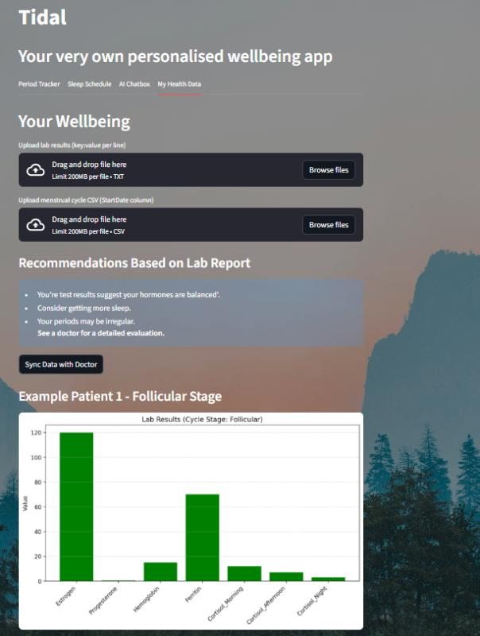
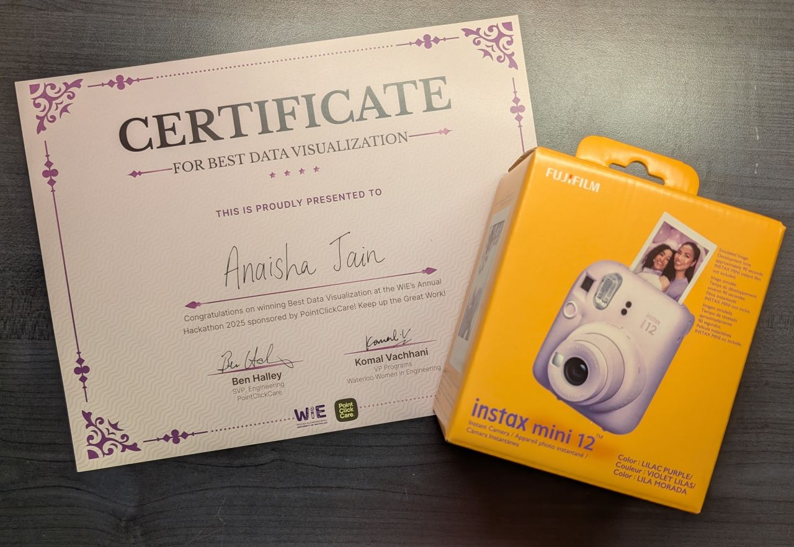

Tidal: Women's Health Monitoring App
Overview
Tidal is a women's health app my team built at the WiE hackathon, where the challenge was to combine AI and healthcare. It brings a woman's cycle, sleep and medical documents together, answers personal questions about them with an AI assistant, and shows the results in clear visualisations. We won the Best Data Visualisation category.
The problem
Women's health is shaped by patterns, such as the menstrual cycle and sleep, that most health tools treat as an afterthought. Cycle dates, sleep habits and blood test results usually live in different places, and it is hard to see how they connect when everyday life is busy.
The hackathon asked for something at the intersection of AI and healthcare. We took a holistic approach: help women understand their own patterns, get to know their bodies, and take their health in stride.
What we built
Tidal is a web app where a user brings together three kinds of information and then asks questions about them.
1. Upload your data
Users upload their period cycle history, their sleep schedule, and blood tests or other medical documents.
2. Ask the AI assistant
Tidal's AI assistant answers personal questions based on where the user currently is in their cycle, their sleep schedule and the documents they uploaded, so its answers reflect their own situation and not generic advice.
3. See the results
The app turns the user's data into visualisations that make their patterns easy to read at a glance. This is the feature that won us the Best Data Visualisation award.

Figure 1: Tidal's visualisation of a user's results.
How it works
The whole app is written in Python. Streamlit provides the interface, Pandas handles analysing and visualising the data, and the OpenAI API powers the assistant.
| Tool | Role |
|---|---|
| Python | The language for the entire project |
| Streamlit | The web interface: uploads, questions and charts |
| Pandas | Analysing the cycle and sleep data and preparing it for visualisation |
| OpenAI API | The assistant that answers personal questions from the user's data and documents |
Outcome
Tidal won the Best Data Visualisation category at the WiE hackathon. Github link!

Figure 2: The certificate and prize we won.
Skills this project shows
| Skill | Where it appears in Tidal |
|---|---|
| Data analysis | Working with cycle and sleep data in Pandas |
| Data visualisation | Charts that make personal health patterns easy to read (the award-winning feature) |
| AI integration | Connecting the OpenAI API to a user's own data and documents |
| Rapid prototyping | Building a working app with Streamlit within a hackathon |
| Teamwork | Building and presenting a project with a team under a deadline |
| Product thinking | Designing for a real group of users and their specific needs |